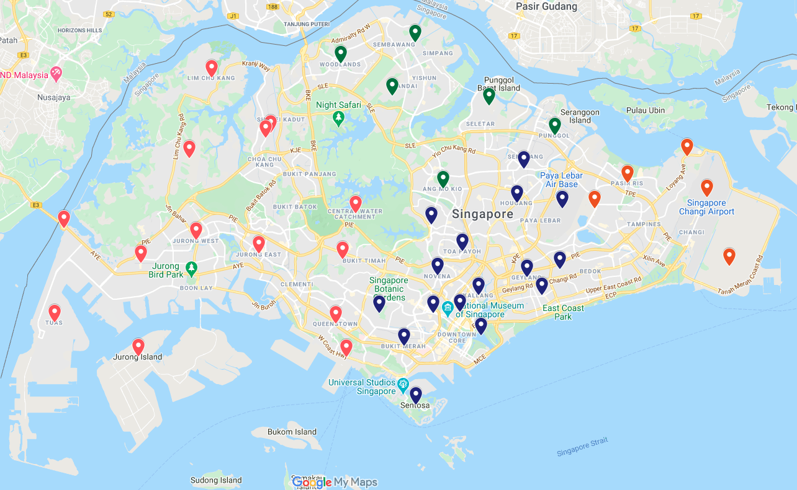
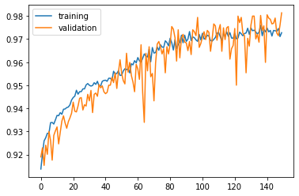
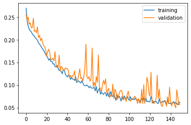

CS3237 Weather Nowcasting
 |
 |
 |
 |
| Benjamin | Zeno | Haozhe | Kendrik |
Problem Statement
To design a portable, localized weather forecasting device to collect live weather data at a current location in Singapore.
But... Why?
Singapore is often sunny and humid, with a chance of rainfall. Knowing the weather in the future locally can help people plan activities better... And it's a school project.
CC2650 SensorTag as a weather prediction device
Process of obtaining weather prediction in a user's perspective

- We collect data from the SensorTag and stored this data in a database in an hourly interval. An MQTT broker on a Raspberry Pi requests the SensorTag for this data. The query is initiated by the user.
- Database is queried by the server.
- SensorTag data from mongoDB is sent back to the server.
- Data unacquirable by the SensorTag will be complemented by WeatherAPI data.
- WeatherAPI data is sent back to the server, were data is combined and preprocessed for inference by a Long-Short-Term-Memory (LSTM) Neural Network.
- Four weather radar images from the Metereological Service of Singapore (MSS) for the current timestamp and the past 30 minutes are queried.
- Weather radar images are downloaded to the server to be used by a Convolutional Neural Network (CNN).
- The server predicts the probability of rain within the next hour using an AND result from both neural networks. The LSTM predicts rain using ground sensor data, while CNN predicts rain using weather radar images.
Data Collected from:

9th October to 29th October
at hourly intervals
Features Selected:

Temperature
Pressure

Humidity
UV Index

Wind Speed
41 different regions in Singapore sampled
Data from past three hours used to predict for next hour

Train Data Results
98.1%
accuracy
92.1%
precision
87.5%
recall
89.8%
F1 score
Test Data Results
98.1%
accuracy
90.4%
precision
90.4%
recall
90.4%
F1 score
Accuracy vs Epochs

Loss vs Epochs
